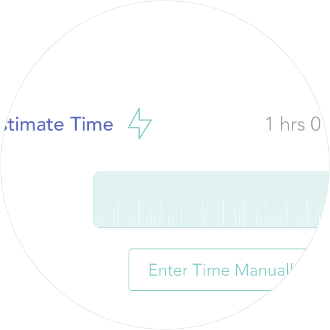
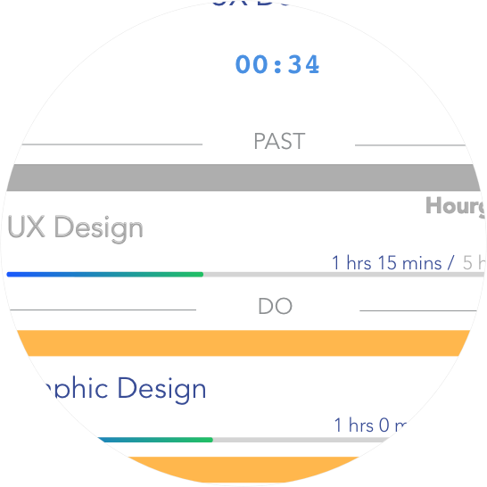
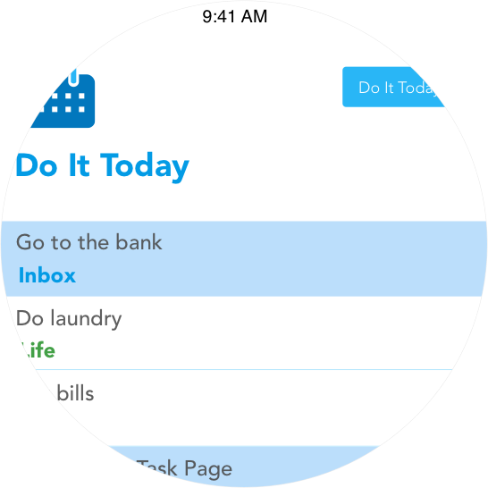
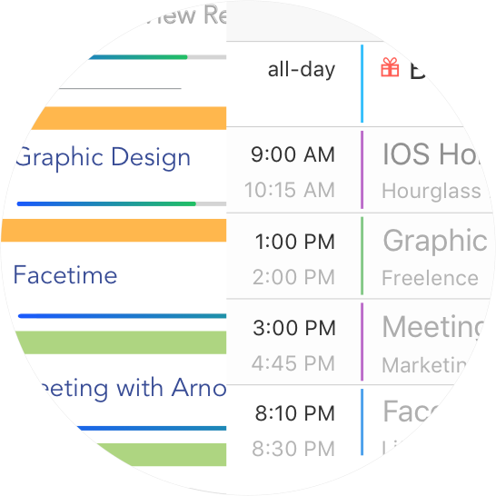
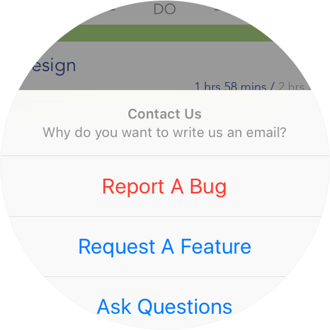

Why Hourglass
We care about productivities a lot. Time is valuable. 24 hours a day is not enough for most of us. We want to get more stuff done, but how? To achieve more in limited time, We believe it is important to do things faster and never waste any of the valuable time. That is why hourglass is born.
In Hourglass, you need to set up an estimated time whenever you create a new task. It is the first time tracking app that gives you a crystal clear comparison between the actual time and the estimated time on a particular task.

When you give yourself a time limit, and you are approaching the limit, you will hurry up and be more focus. Try the best to keep yourself on schedule to decrease the amount of time you spent on each task every day.

Many People use a to-do list to organize their everyday tasks. Yes, a to-do list is a useful tool to memorize all things you need to do. However, when you have many tasks in the list, it sometimes becomes hard and tricky to choose which one to start.
In hourglass, you leave the schedule area empty if you don't know when to do the task. Every morning, a notification will be delivered to help you plan your day. Slide that notification and you will be direct into the planning feature. Inside, A list of all unscheduled tasks will be displayed. Think what you want to achieve throughout the day and select your tasks from it. Instantly all those tasks will appear in the today view for you to complete them.

When you finish your day, take a look at the today view again. If there are still tasks uncompleted, think about the reason you haven’t completed them. Maybe you need to work harder tomorrow, or perhaps you should just give yourself fewer tasks.
Instead of developing own dashboard, we decided to integrate them with the system calendar. iPhone’s system calendar is a great tool. The apple's native design makes it one of the best calendars on your phone. With iCloud sync, you will be able to view all your calendar events on all the devices.
The sync feature works as follows. When you finish tracking a task, hourglass automatically creates a calendar event. When you create a new project, we create the corresponding calendar for you as well. All these happens in the background without notice.

The calendar sync feature also goes reversely. When you delete a calendar event, that particular time entry logged in Hourglass goes away. You can see the total time for a task decrease. When the time range of a particular calendar event changed, it also affects the logged entry in Hourglass. You can see the progress bar becomes longer or shorter depends on how you modify the time range in the calendar event.
Although “Hourglass” has already released to the public, we are still developing it to make it better. We are adding more features to the app, such as Pomodoro feature, sync with multiple devices, multiple platform support and so on.
Currently, the app published only to Canadian App Store. As we are adding more features to the app, we will localize it and establish it to the world. Depending on how many features we developed, the price of “Hourglass” will be higher in the future.

If you encounter any problems, please let us know. If you want any features in “Hourglass”, feel free to contact us as well. We want to hear from you to make “Hourglass” better. Your support is the greatest impetus for us.
To contact us, either shake your iPhone within the app or click "contact us" button in hourglasslab.com. Email: support@hourglasslab.com

 Focus
Focus